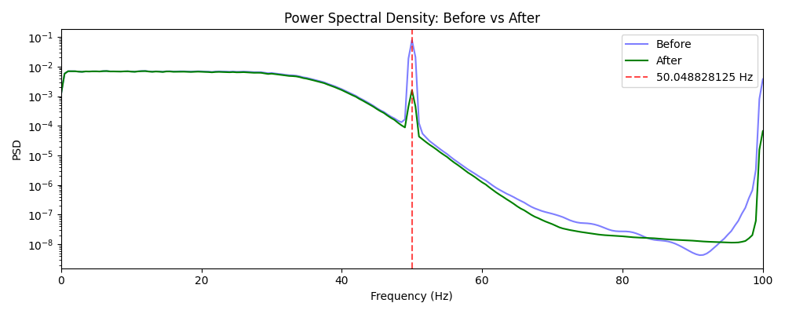
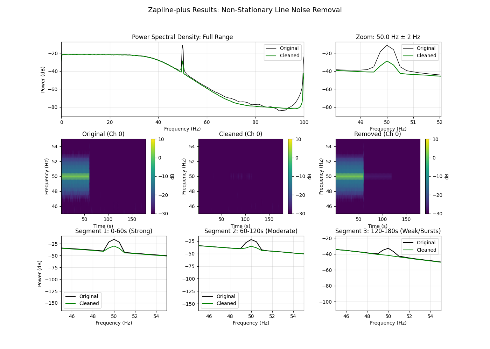

Note
Go to the end to download the full example code.
ZapLine-plus: Paper-Faithful Example (Klug & Kloosterman 2022)#
This example replicates the core demonstrations from the Zapline-plus paper, showing the adaptive cleaning process on synthetic data.
The paper (Klug & Kloosterman 2022) demonstrates: 1. Automatic noise frequency detection 2. Adaptive chunk segmentation based on covariance stationarity 3. Per-chunk component removal with outlier detection 4. QA loop for under/over-cleaning adaptation
We create visualizations similar to the paper figures to demonstrate our Python implementation matches the MATLAB reference.
# Authors: Sina Esmaeili <sina.esmaeili@umontreal.ca>
import warnings
import matplotlib.pyplot as plt
import numpy as np
from matplotlib.gridspec import GridSpec
from scipy import signal
from mne_denoise.viz.zapline import plot_psd_comparison
from mne_denoise.zapline.adaptive import (
check_artifact_presence,
find_fine_peak,
find_noise_freqs,
segment_data,
)
# Suppress warnings for cleaner output
warnings.filterwarnings("ignore")
Paper Parameters#
Match the paper’s recommended settings for comparison.
PAPER_PARAMS = {
"minfreq": 17, # Minimum search frequency (Hz)
"maxfreq": 99, # Maximum search frequency (Hz)
"detectionWinsize": 6, # Window size for detection (Hz)
"coarseFreqDetectPowerDiff": 4, # Threshold (10*log10 units, ~2.5x power)
"noiseCompDetectSigma": 3.0, # Initial sigma for outlier detection
"minSigma": 2.5, # Minimum sigma for adaptation
"maxSigma": 4.0, # Maximum sigma for adaptation (paper says 5, but 4 is safer)
"minChunkLength": 30, # Minimum chunk length (seconds)
"segmentLength": 1, # Segment length for covariance (seconds)
"freqDetectMultFine": 2, # Multiplier for fine detection threshold
"detailedFreqBoundsUpper": [-0.05, 0.05], # For "too weak" check
"detailedFreqBoundsLower": [-0.4, 0.1], # For "too strong" check
"maxProportionAboveUpper": 0.005,
"maxProportionBelowLower": 0.005,
}
Simulate Realistic Non-Stationary Data#
Following the paper’s approach: line noise that varies in topography and strength over time.
def generate_nonstationary_data(
sfreq=250,
duration=180, # 3 minutes
n_ch=32,
line_freq=50.0,
seed=42,
):
"""Generate data with non-stationary line noise.
Creates a scenario with:
- Chunk 1 (0-60s): Strong 50 Hz, Topography A
- Chunk 2 (60-120s): Moderate 50.05 Hz (drift), Topography B
- Chunk 3 (120-180s): Weak/absent noise (bursts only)
"""
rng = np.random.RandomState(seed)
n_times = int(duration * sfreq)
times = np.arange(n_times) / sfreq
# Background brain activity (pink noise-like)
# Simulate 1/f spectrum using filtered noise
brain = rng.randn(n_ch, n_times)
# Low-pass to simulate neural activity spectrum
sos = signal.butter(4, 40, btype="low", fs=sfreq, output="sos")
brain = signal.sosfiltfilt(sos, brain, axis=1)
brain = brain / np.std(brain) * 0.5 # Normalize
# Define segment boundaries
t1 = int(60 * sfreq)
t2 = int(120 * sfreq)
# Topography A: Frontal-like (strong on first channels)
topo_a = np.exp(-np.linspace(0, 4, n_ch))
topo_a /= np.linalg.norm(topo_a)
# Topography B: Posterior-like (strong on last channels)
topo_b = np.exp(-np.linspace(0, 4, n_ch)[::-1])
topo_b /= np.linalg.norm(topo_b)
# Topography C: Bipolar (alternating)
topo_c = np.sin(np.linspace(0, 2 * np.pi, n_ch))
topo_c /= np.linalg.norm(topo_c)
# Initialize noise array
noise = np.zeros((n_ch, n_times))
# Chunk 1: Strong 50 Hz
freq1 = line_freq
ts1 = np.sin(2 * np.pi * freq1 * times[:t1])
# Add harmonics (realistic line noise)
ts1 += 0.3 * np.sin(2 * np.pi * 2 * freq1 * times[:t1])
ts1 += 0.1 * np.sin(2 * np.pi * 3 * freq1 * times[:t1])
noise[:, :t1] = np.outer(topo_a, ts1) * 3.0
# Chunk 2: Moderate 50.05 Hz (frequency drift)
freq2 = line_freq + 0.05
ts2 = np.sin(2 * np.pi * freq2 * times[t1:t2])
ts2 += 0.3 * np.sin(2 * np.pi * 2 * freq2 * times[t1:t2])
noise[:, t1:t2] = np.outer(topo_b, ts2) * 1.5
# Chunk 3: Bursts only
# 10% of time has noise, 90% clean
freq3 = line_freq - 0.05
ts3 = np.sin(2 * np.pi * freq3 * times[t2:])
burst_mask = np.zeros(n_times - t2)
n_bursts = 5
burst_len = int(sfreq * 2) # 2s bursts
for i in range(n_bursts):
start = rng.randint(0, n_times - t2 - burst_len)
burst_mask[start : start + burst_len] = 1.0
noise[:, t2:] = np.outer(topo_c, ts3 * burst_mask) * 0.5
data = brain + noise
return (
data,
times,
{
"t1": t1,
"t2": t2,
"freq1": freq1,
"freq2": freq2,
"freq3": freq3,
"topo_a": topo_a,
"topo_b": topo_b,
"topo_c": topo_c,
},
)
Generate Data#
print("Generating non-stationary synthetic data...")
sfreq = 250
data, times, sim_info = generate_nonstationary_data(sfreq=sfreq)
n_ch, n_times = data.shape
duration = n_times / sfreq
print(f" Shape: {n_ch} channels × {n_times} samples ({duration:.0f}s)")
print(" Noise structure:")
print(f" 0-60s: {sim_info['freq1']} Hz, strong, frontal topography")
print(f" 60-120s: {sim_info['freq2']} Hz, moderate, posterior topography")
print(f" 120-180s: {sim_info['freq3']} Hz, weak bursts, bipolar topography")
Generating non-stationary synthetic data...
Shape: 32 channels × 45000 samples (180s)
Noise structure:
0-60s: 50.0 Hz, strong, frontal topography
60-120s: 50.05 Hz, moderate, posterior topography
120-180s: 49.95 Hz, weak bursts, bipolar topography
Step 1: Automatic Noise Frequency Detection#
The paper uses a Welch PSD with Hanning window, then searches for peaks that exceed the “center power” (mean of flanks) by > 4 dB.
print("\n--- Step 1: Automatic Frequency Detection ---")
detected_freqs = find_noise_freqs(
data,
sfreq,
fmin=PAPER_PARAMS["minfreq"],
fmax=PAPER_PARAMS["maxfreq"],
window_length=PAPER_PARAMS["detectionWinsize"],
threshold_factor=PAPER_PARAMS["coarseFreqDetectPowerDiff"],
)
print(f"Detected noise frequencies: {detected_freqs}")
# Visualize detection
fig, ax = plt.subplots(figsize=(10, 4))
f, psd = signal.welch(data, fs=sfreq, nperseg=int(sfreq * 4), axis=-1)
psd_log = 10 * np.log10(np.clip(psd, 1e-20, None))
mean_psd = np.mean(psd_log, axis=0)
ax.plot(f, mean_psd, "k-", lw=1)
for freq in detected_freqs:
ax.axvline(freq, color="r", ls="--", alpha=0.7, label=f"Detected: {freq:.1f} Hz")
ax.set_xlim(40, 70)
ax.set_xlabel("Frequency (Hz)")
ax.set_ylabel("Power (10*log10)")
ax.set_title("Automatic Noise Frequency Detection")
ax.legend()
plt.tight_layout()
plt.show()
--- Step 1: Automatic Frequency Detection ---
Detected noise frequencies: [np.float64(50.048828125)]
Step 2: Adaptive Data Segmentation#
Segment data based on covariance stationarity (changing noise topography).
print("\n--- Step 2: Adaptive Segmentation ---")
target_freq = detected_freqs[0] if detected_freqs else 50.0
segments = segment_data(
data, sfreq, target_freq, min_chunk_len=PAPER_PARAMS["minChunkLength"]
)
print(f"Number of segments: {len(segments)}")
for i, (start, end) in enumerate(segments):
print(
f" Segment {i + 1}: {start / sfreq:.1f}s - {end / sfreq:.1f}s ({(end - start) / sfreq:.1f}s)"
)
--- Step 2: Adaptive Segmentation ---
Number of segments: 3
Segment 1: 0.0s - 60.0s (60.0s)
Segment 2: 60.0s - 120.0s (60.0s)
Segment 3: 120.0s - 180.0s (60.0s)
Step 3: Per-Segment Processing#
For each segment: 1. Fine-tune frequency 2. Check artifact presence 3. Run ZapLine with adaptive component selection
print("\n--- Step 3: Per-Segment Processing ---")
segment_info = []
for i, (start, end) in enumerate(segments):
chunk = data[:, start:end]
# Fine-tune frequency
fine_freq = find_fine_peak(chunk, sfreq, target_freq, search_width=0.1)
# Check presence
present = check_artifact_presence(chunk, sfreq, fine_freq)
segment_info.append(
{"start": start, "end": end, "fine_freq": fine_freq, "present": present}
)
status = "DETECTED" if present else "NOT DETECTED"
print(f" Segment {i + 1}: Fine freq = {fine_freq:.3f} Hz, Artifact {status}")
--- Step 3: Per-Segment Processing ---
Segment 1: Fine freq = 50.000 Hz, Artifact DETECTED
Segment 2: Fine freq = 50.050 Hz, Artifact DETECTED
Segment 3: Fine freq = 49.950 Hz, Artifact DETECTED
Step 4: Apply Zapline-plus#
Use the full pipeline with QA loop.
print("\n--- Step 4: Apply Zapline-plus ---")
from mne_denoise.zapline import ZapLine
# Configure adaptive ZapLine
zl = ZapLine(
sfreq=sfreq,
line_freq=target_freq, # Use detected frequency or None
adaptive=True,
adaptive_params={
"fmin": PAPER_PARAMS["minfreq"],
"fmax": PAPER_PARAMS["maxfreq"],
"n_remove_params": {
"sigma": PAPER_PARAMS["noiseCompDetectSigma"],
"min_remove": 1,
"max_prop": 0.2,
},
"qa_params": {
"max_sigma": PAPER_PARAMS["maxSigma"],
"min_sigma": PAPER_PARAMS["minSigma"],
},
},
)
# Run Fit+Transform
data_clean = zl.fit_transform(data)
result = zl.adaptive_results_
print(f"Cleaning complete. Components removed: {result['n_removed']}")
--- Step 4: Apply Zapline-plus ---
Cleaning complete. Components removed: 7
Paper-Style Results Visualization#
Use our reusable viz functions for quick overview, then custom plots.
# Quick overview using our viz functions
plot_psd_comparison(data, data_clean, sfreq, line_freq=target_freq, show=True)
fig = plt.figure(figsize=(14, 10))
gs = GridSpec(3, 3, figure=fig, hspace=0.3, wspace=0.3)
# 1. Original vs Cleaned PSD (Full)
ax1 = fig.add_subplot(gs[0, :2])
f_orig, psd_orig = signal.welch(data, fs=sfreq, nperseg=int(sfreq * 4), axis=-1)
f_clean, psd_clean = signal.welch(data_clean, fs=sfreq, nperseg=int(sfreq * 4), axis=-1)
mean_orig = np.mean(10 * np.log10(np.clip(psd_orig, 1e-20, None)), axis=0)
mean_clean = np.mean(10 * np.log10(np.clip(psd_clean, 1e-20, None)), axis=0)
ax1.plot(f_orig, mean_orig, "k-", lw=1, label="Original")
ax1.plot(f_clean, mean_clean, "g-", lw=1.5, label="Cleaned")
ax1.set_xlim(0, 100)
ax1.set_xlabel("Frequency (Hz)")
ax1.set_ylabel("Power (dB)")
ax1.set_title("Power Spectral Density: Full Range")
ax1.legend()
ax1.grid(True, alpha=0.3)
# 2. Zoom on Noise Frequency
ax2 = fig.add_subplot(gs[0, 2])
ax2.plot(f_orig, mean_orig, "k-", lw=1, label="Original")
ax2.plot(f_clean, mean_clean, "g-", lw=1.5, label="Cleaned")
ax2.set_xlim(target_freq - 2, target_freq + 2)
ax2.set_xlabel("Frequency (Hz)")
ax2.set_title(f"Zoom: {target_freq:.1f} Hz ± 2 Hz")
ax2.legend()
ax2.grid(True, alpha=0.3)
# 3. Spectrogram (Original)
ax3 = fig.add_subplot(gs[1, 0])
f_spec, t_spec, Sxx = signal.spectrogram(
data[0], fs=sfreq, nperseg=int(sfreq * 2), noverlap=int(sfreq)
)
im = ax3.pcolormesh(
t_spec,
f_spec,
10 * np.log10(Sxx + 1e-20),
shading="gouraud",
cmap="viridis",
vmin=-30,
vmax=10,
)
ax3.set_ylim(45, 55)
ax3.set_xlabel("Time (s)")
ax3.set_ylabel("Frequency (Hz)")
ax3.set_title("Original (Ch 0)")
plt.colorbar(im, ax=ax3, label="dB")
# 4. Spectrogram (Cleaned)
ax4 = fig.add_subplot(gs[1, 1])
f_spec, t_spec, Sxx_clean = signal.spectrogram(
data_clean[0], fs=sfreq, nperseg=int(sfreq * 2), noverlap=int(sfreq)
)
im = ax4.pcolormesh(
t_spec,
f_spec,
10 * np.log10(Sxx_clean + 1e-20),
shading="gouraud",
cmap="viridis",
vmin=-30,
vmax=10,
)
ax4.set_ylim(45, 55)
ax4.set_xlabel("Time (s)")
ax4.set_ylabel("Frequency (Hz)")
ax4.set_title("Cleaned (Ch 0)")
plt.colorbar(im, ax=ax4, label="dB")
# 5. Spectrogram (Removed)
ax5 = fig.add_subplot(gs[1, 2])
removed = data - data_clean
f_spec, t_spec, Sxx_rem = signal.spectrogram(
removed[0], fs=sfreq, nperseg=int(sfreq * 2), noverlap=int(sfreq)
)
im = ax5.pcolormesh(
t_spec,
f_spec,
10 * np.log10(Sxx_rem + 1e-20),
shading="gouraud",
cmap="viridis",
vmin=-30,
vmax=10,
)
ax5.set_ylim(45, 55)
ax5.set_xlabel("Time (s)")
ax5.set_ylabel("Frequency (Hz)")
ax5.set_title("Removed (Ch 0)")
plt.colorbar(im, ax=ax5, label="dB")
# 6. Per-Segment Comparison
t1 = sim_info["t1"]
t2 = sim_info["t2"]
ax6 = fig.add_subplot(gs[2, 0])
f1, p1_o = signal.welch(data[:, :t1], fs=sfreq, nperseg=int(sfreq * 2), axis=-1)
f1, p1_c = signal.welch(data_clean[:, :t1], fs=sfreq, nperseg=int(sfreq * 2), axis=-1)
ax6.plot(f1, np.mean(10 * np.log10(p1_o + 1e-20), axis=0), "k-", label="Original")
ax6.plot(f1, np.mean(10 * np.log10(p1_c + 1e-20), axis=0), "g-", label="Cleaned")
ax6.set_xlim(45, 55)
ax6.set_title("Segment 1: 0-60s (Strong)")
ax6.set_xlabel("Frequency (Hz)")
ax6.set_ylabel("Power (dB)")
ax6.legend()
ax6.grid(True, alpha=0.3)
ax7 = fig.add_subplot(gs[2, 1])
f2, p2_o = signal.welch(data[:, t1:t2], fs=sfreq, nperseg=int(sfreq * 2), axis=-1)
f2, p2_c = signal.welch(data_clean[:, t1:t2], fs=sfreq, nperseg=int(sfreq * 2), axis=-1)
ax7.plot(f2, np.mean(10 * np.log10(p2_o + 1e-20), axis=0), "k-", label="Original")
ax7.plot(f2, np.mean(10 * np.log10(p2_c + 1e-20), axis=0), "g-", label="Cleaned")
ax7.set_xlim(45, 55)
ax7.set_title("Segment 2: 60-120s (Moderate)")
ax7.set_xlabel("Frequency (Hz)")
ax7.legend()
ax7.grid(True, alpha=0.3)
ax8 = fig.add_subplot(gs[2, 2])
f3, p3_o = signal.welch(data[:, t2:], fs=sfreq, nperseg=int(sfreq * 2), axis=-1)
f3, p3_c = signal.welch(data_clean[:, t2:], fs=sfreq, nperseg=int(sfreq * 2), axis=-1)
ax8.plot(f3, np.mean(10 * np.log10(p3_o + 1e-20), axis=0), "k-", label="Original")
ax8.plot(f3, np.mean(10 * np.log10(p3_c + 1e-20), axis=0), "g-", label="Cleaned")
ax8.set_xlim(45, 55)
ax8.set_title("Segment 3: 120-180s (Weak/Bursts)")
ax8.set_xlabel("Frequency (Hz)")
ax8.legend()
ax8.grid(True, alpha=0.3)
fig.suptitle("Zapline-plus Results: Non-Stationary Line Noise Removal", fontsize=14)
plt.tight_layout()
plt.show()
- 
- 
Quantitative Evaluation#
Compute metrics similar to the paper.
print("\n--- Quantitative Evaluation ---")
def compute_noise_ratio(data_orig, data_clean, sfreq, noise_freq, win=0.5):
"""Compute ratio of power at noise freq to surroundings."""
f, psd_o = signal.welch(data_orig, fs=sfreq, nperseg=int(sfreq * 2), axis=-1)
f, psd_c = signal.welch(data_clean, fs=sfreq, nperseg=int(sfreq * 2), axis=-1)
psd_o = np.mean(psd_o, axis=0)
psd_c = np.mean(psd_c, axis=0)
# Noise band
noise_mask = (f > noise_freq - win) & (f < noise_freq + win)
# Surroundings (flanks)
surr_mask = ((f > noise_freq - 3) & (f < noise_freq - 1)) | (
(f > noise_freq + 1) & (f < noise_freq + 3)
)
ratio_orig = np.mean(psd_o[noise_mask]) / np.mean(psd_o[surr_mask])
ratio_clean = np.mean(psd_c[noise_mask]) / np.mean(psd_c[surr_mask])
return ratio_orig, ratio_clean
# Overall
ratio_o, ratio_c = compute_noise_ratio(data, data_clean, sfreq, target_freq)
print(f"Noise/Surroundings Ratio: {ratio_o:.2f}x → {ratio_c:.2f}x (target ~1.0)")
# Per segment
ratio_o1, ratio_c1 = compute_noise_ratio(
data[:, :t1], data_clean[:, :t1], sfreq, sim_info["freq1"]
)
ratio_o2, ratio_c2 = compute_noise_ratio(
data[:, t1:t2], data_clean[:, t1:t2], sfreq, sim_info["freq2"]
)
ratio_o3, ratio_c3 = compute_noise_ratio(
data[:, t2:], data_clean[:, t2:], sfreq, sim_info["freq3"]
)
print(f" Segment 1 (Strong): {ratio_o1:.2f}x → {ratio_c1:.2f}x")
print(f" Segment 2 (Moderate): {ratio_o2:.2f}x → {ratio_c2:.2f}x")
print(f" Segment 3 (Weak): {ratio_o3:.2f}x → {ratio_c3:.2f}x")
# Power removed
total_power_orig = np.var(data)
total_power_clean = np.var(data_clean)
pct_removed = (1 - total_power_clean / total_power_orig) * 100
print(f"\nTotal Power Removed: {pct_removed:.2f}%")
print("\n[OK] Example complete!")
--- Quantitative Evaluation ---
Noise/Surroundings Ratio: 510.46x → 13.94x (target ~1.0)
Segment 1 (Strong): 2162.88x → 57.46x
Segment 2 (Moderate): 390.96x → 4.91x
Segment 3 (Weak): 5.94x → 0.80x
Total Power Removed: 21.68%
[OK] Example complete!
Total running time of the script: (0 minutes 3.454 seconds)